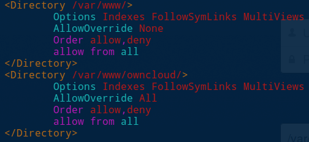
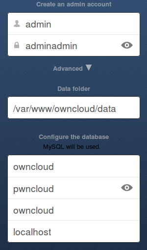

Owncloud installatie
Robbe Van der Gucht, 23/12/2013
Ik start met een vers geïnstalleerde Ubuntu 64-bit server VM. Het eerste wat ik doe is LAMP installeren omdat dit automatisch een groot deel van de dependencies zal vervullen.
sudo -i
tasksel
# selecteer LAMP
<enter>
# installeer additionele dependencies
aptitude install curl php5-curl smbclient libcurl3 php5-gd php-xml-parser php5-intl
# download de tarbal
wget http://download.owncloud.org/community/owncloud-6.0.0a.tar.bz2
tar -xjf owncloud-6.0.0a.tar.bz2
cp -R owncloud /var/www/
# zorg dat de apache2 account eigenaar van de bestanden is
chown -R www-data:www-data /var/www/owncloud/ Pas /etc/apache2/sites-enabled/000-defaultaan. Zet AllowOverride op All. Daarna kun je best eens apache herstarten met service apache2 restart.

Nu moeten we nog de MySQL server configureren. We loggen in met root. Daarna maken we een gebruiker owncloud aan met passwoord pwncloud. We maken ook een database owncloud aan en geven de gebruiker owncloud alle rechten op de database owncloud_.
sudo -i
service mysql start
mysql -u root -p
> toor
mysql> CREATE USER 'owncloud'@'localhost' IDENTIFIED BY 'pwncloud';
mysql> CREATE DATABASE owncloud;
mysql> GRANT ALL ON owncloud.* TO 'owncloud'@'localhost';Surf naar de machine. Bijvoorbeeld http://192.168.5.103/owncloud
admin adminadmin
En vul de gegevens in.
